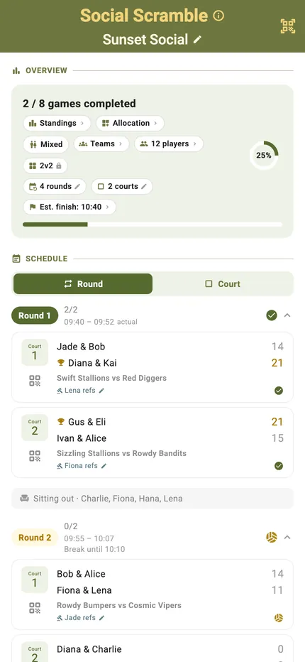
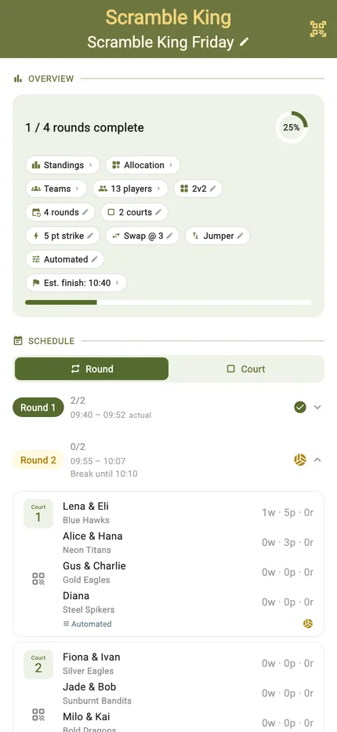
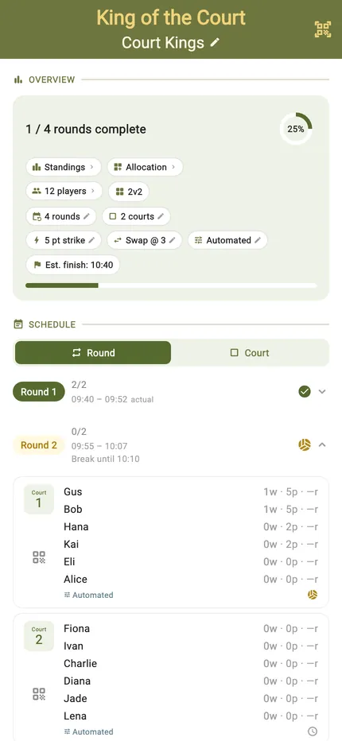
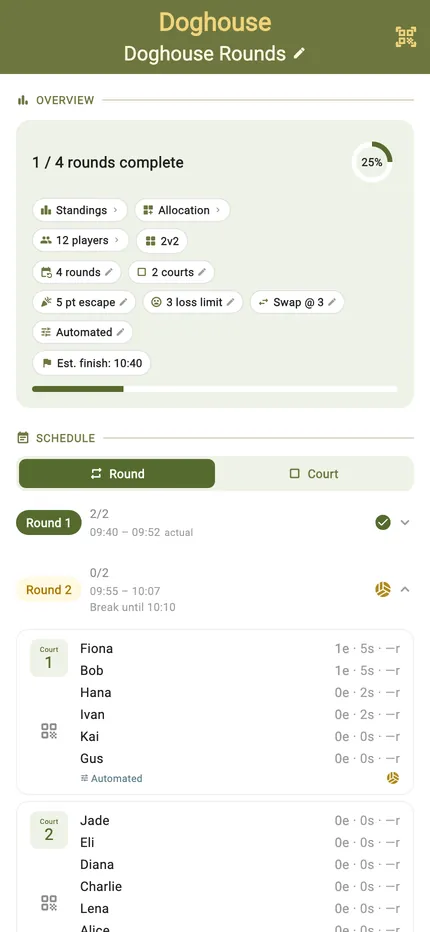
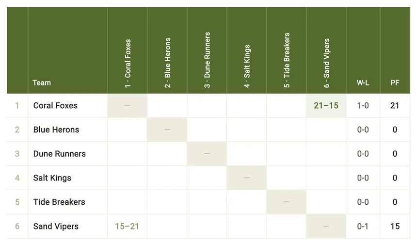
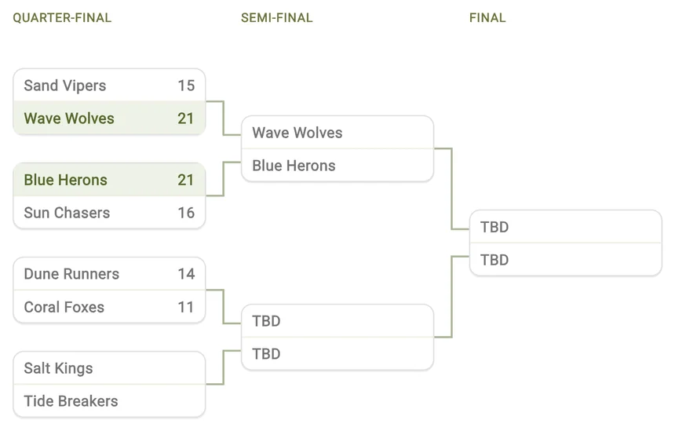
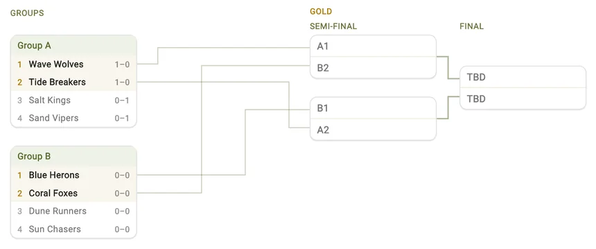
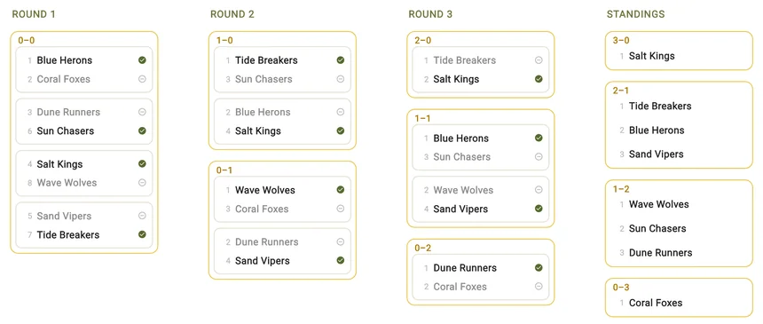
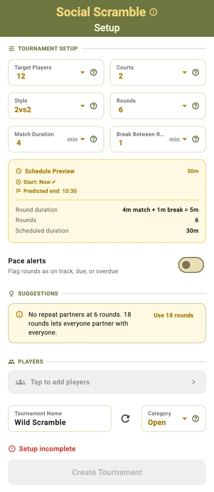
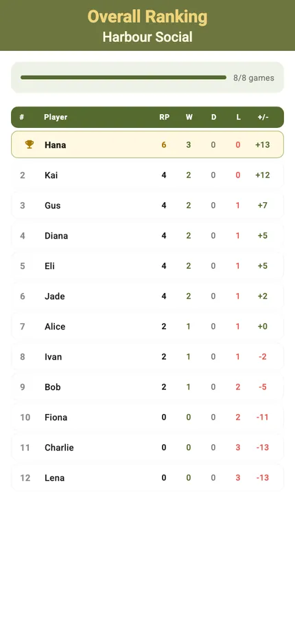

The volleyball is great. The admin is not.
It's 32 degrees. That last rally was unbelievable. And now nobody is quite sure whether it's 5–4 or 6–4 — or whose serve it is. Every session has this moment. TournaQ makes it disappear.
Quickly set up a scoreboard, run single player or team competitions, and easily manage your own tournament.
Two taps per rally and the score lives on the phone instead of in someone's head. Got a call wrong? Undo the last point and carry on.
Side changes and serving order are tracked for you. The game stops for good reasons — not because someone lost count of the ends.
The next round is drawn and on screen before anyone has to ask. No huddle around a piece of paper between games.
Standings and rankings update themselves after every match. The winner comes out of the results, not out of the loudest memory.
Just need a scoreboard? (Quick Game)
Sometimes there is no tournament. Two teams, one match, and nobody wants to spend ten minutes setting things up first.
- On the scoreboard in seconds. Name the two sides yourself, pull in a saved team, or tap Generate Random Teams and go straight to scoring.
- Set the format, or don't. Target score and number of sets are there when you want them — otherwise just start.
- Two taps a rally. Points, sets, serve and side changes all tracked, with undo for when a call goes the other way.
- Saved when you're done. The finished match lands in your history with the full score for every set.


Mix the people, not just the teams (Single Player Competitions)
The best sessions are the ones where everyone plays with everyone. In these formats you enter as a player rather than as a team — TournaQ draws the partners, balances the rounds, and keeps a ranking for every individual player.
Social Scrambles
A new partner every round. Everyone plays with everyone, and the draw is done before you've finished stretching.

Scramble Kings
The whole pool scrambled across every court, with King of the Court scoring on each one. Chaos, organised round by round.

Kings of the Court
Win and you stay on. Lose and you're straight back in the queue. Fast, loud, and impossible to stop playing.

Doghouses
Hold your nerve and get out of the doghouse. Continuous play, no downtime, and a running score that keeps everybody honest.

Or turn up with your partner (Team Competitions)
Some days you play as a team. Four formats, all playable today — each one a different answer to the same question: who is actually best, and how much time have you got to find out?
Leagues
Points-based standingsEveryone plays everyone. Nobody goes home after one bad set, and the table at the end is the honest one — the crosstable shows every pairing, every result, and who beat whom.

Eliminations
Knockout bracket — one or two livesQuarter-final to final in one tree, filling itself in as results land. Choose double elimination and a first loss drops a team into the losers bracket instead of out of the event.

TournaQ Classics
Group stage · EliminationsPool play first, so everyone gets a guaranteed run of matches, then the qualifiers feed a Gold bracket. A bigger field can carry a Silver bracket too, so the teams who miss the cut still have something to play for.

Swiss Systems
Paired rounds by scoreNobody is eliminated. After each round teams are re-paired against others on the same record, so the field sorts itself and the games stay close right to the end — a full ranking from a handful of rounds.

- Every format, one place. The TournaQ Arena groups quick games, social formats and team competitions, with your tournament history under each.
- Same engine underneath. Whichever format you pick, matches are scored the same way and the standings keep themselves up to date.
- Not sure which to run? Every mode card carries an info button explaining the format before you commit to it.

A real tournament, run from your pocket
Plenty of apps hand you a scoreboard. TournaQ hands you the whole session.
- Set it up the way your session actually works. Match length, number of rounds, how many courts, how many players — not a fixed template you have to bend around.
- See the schedule before you commit. The full round-by-round preview appears while you are still setting up, so you know what the afternoon looks like.
- Get told when the draw isn't ideal. TournaQ flags it when partner coverage is uneven or the rounds don't balance — before anyone plays a point.
- Stay on schedule. Every scorecard knows its time slot, so you can see at a glance whether the session is running late.
- Handle the real world. Someone twists an ankle, someone leaves early — mark them out and the draw and standings adjust without losing what has already been played.
- Run several courts at once. Parallel matches feed into one set of standings.


The beach doesn't have wifi. TournaQ doesn't need it.
No signal, no account, no sign-up. Everything runs on the phone in your hand — and there is still a way to get the results off it.
Run an entire tournament in a dead spot. Nothing waits for a server, nothing spins, nothing is lost.
Hand a scorecard or the final results to another phone with a QR code — no network involved at all.
Save your players, teams and groups once at home, then import them onto any device instead of typing every name in the sand.
Group your club or your Tuesday crew, filter to them at setup, and the whole session is ready in seconds.
Built for the volley family
TournaQ Volley is made first and foremost for beach volleyball and footvolley. Anything scored the same way — rallies, points and sets — plays just as well.
Bring it to your next session
TournaQ is in beta and being shaped by the people using it on court. Join in, run your next tournament with it, and tell us what should change.
Already using a platform for registration and payments? Keep it — TournaQ takes over at the court and hands the results back.
For organisers & platforms →Interested in TournaQ, have a question, or want to share feedback? We'd love to hear from you.